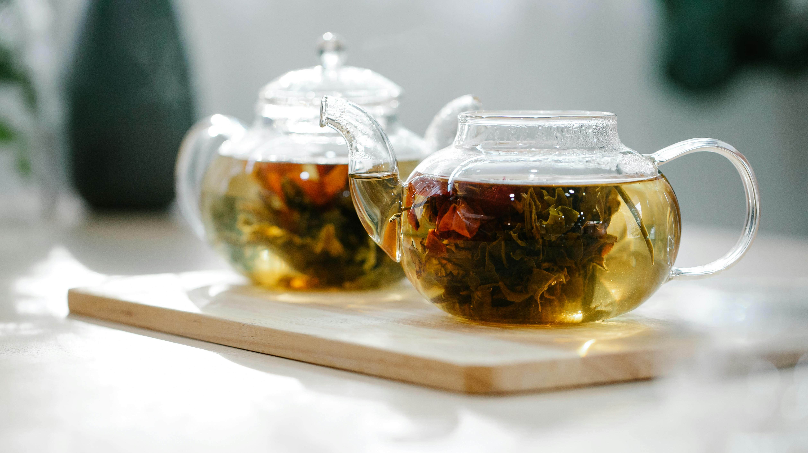

kopi adalah minuman yang dibuat dari biji kopi yang disangrai dan digiling. Teh adalah minuman hasil seduhan Camellia sinensis. Keduanya populer di seluruh dunia dan menjadi bagian dari budaya serta gaya hidup
Jenis-jenis Kopi

- Arabika - Rasa ringan dan asam seimbang
- Robusta - Kuat, pahit, dan berkafein tinggi
Jenis-jenis Teh
- Teh Hijau - Ringan dan menyehatkan
- Teh Hitam - Warna gelap, rasa kuat